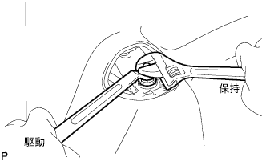

Support the rear axle beam with a jack via a piece of wood.
|  |
Fix the two -sided width of the rear shock absorber ASSY LH and remove the two nuts.
Remove the rear shock absorbacession retainer and rear suspension support.
 |
Remove the nut and the rear shock absorbaspaca and remove the rear shock absorber ASSY LH.
Remove the rear suspension support associated Assy LH from the rear shock absorber ASSY LH.